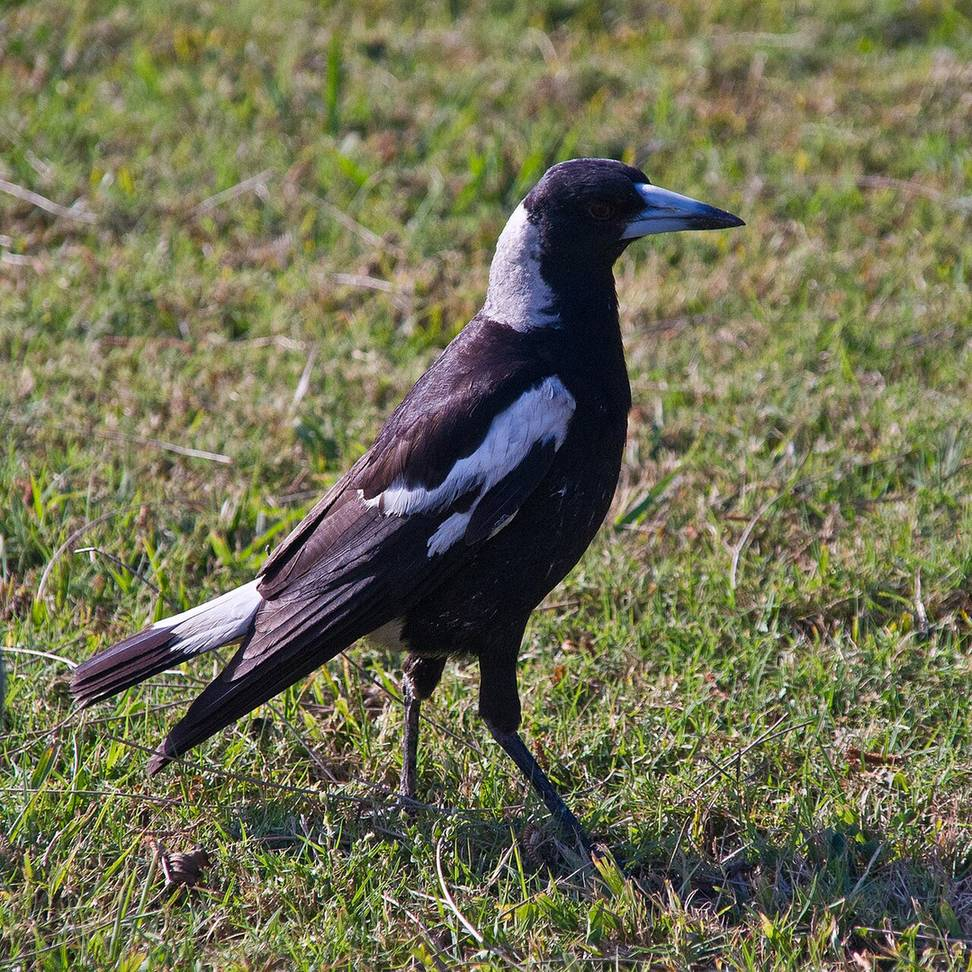

Australian magpie
makipai · Gymnorhina tibicen
Commonly seen on open ground and in clearings with tall trees nearby.
Story
Magpies from Victoria and Tasmania were released in the 1860s and 1870s in Canterbury, Otago, Hawke's Bay, Wellington and on Kawau. They were brought to eat pasture pests and stayed legally protected until 1951.
Behaviour
Pairs and family groups hold territory all year, carolling 'quardle oodle ardle wardle doodle'. They dive-bomb people near nests in spring and chase off harriers. Young magpies play by rolling on their backs, like kea.